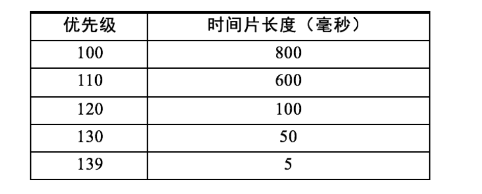
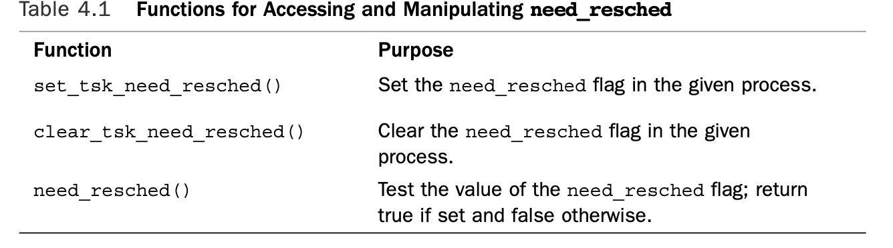

进程的优先级
调度器分配CPU时间的基本依据，就是进程的优先级。根据程序任务性质的不同，程序可以有不同的执行优先级。根据优先级特点，我们可以把进程分为两种类别。
- 实时进程（Real-Time Process）：优先级高、需要尽快被执行的进程。它们一定不能被普通进程所阻挡，例如各种监测系统。
- 普通进程（Normal Process）：优先级低、更长执行时间的进程。例如文本编译器、批处理一段文档。
普通进程根据行为的不同，还可以被分成互动进程（interactive process）和批处理进程（batch process）。互动进程的例子有图形界面，它们可能处在长时间的等待状态，例如等待用户的输入。一旦特定事件发生，互动进程需要尽快被运行响应。一般来说，图形界面的反应时间是50到100毫秒。批处理进程没有与用户交互的，往往在后台被默默地执行。
linux调度favor interactive process over batch process。
实时进程由Linux操作系统创造，普通用户只能创建普通进程。两种进程的优先级不同，实时进程的优先级永远高于普通进程。进程的优先级是一个0到139的整数。数字越小，优先级越高。其中，优先级0到99留给实时进程，100到139留给普通进程。
一个普通进程的默认优先级是120。我们可以用命令nice来修改一个进程的默认优先级。例如有一个可执行程序叫app，执行命令：
$nice -n -20 ./app
命令中的-20指的是从默认优先级上减去20。通过这个命令，内核会将app进程的默认优先级设置成100，也就是普通进程的最高优先级。命令中的-20可以被换成-20至19中任何一个整数。默认优先级将会变成执行时的静态优先级（static priority）。调度器最终使用的优先级是进程的动态优先级： 动态优先级 = 静态优先级 – Bonus + 5
如果这个公式的计算结果小于100或大于139，则为100或139。公式中的Bonus是一个估计值，这个数字越大，代表着它可能越需要被优先执行。如果内核发现这个进程需要经常跟用户交互，将会把Bonus值设置成大于5的数字。如果进程不经常跟用户交互，内核将会把进程的Bonus设置成小于5的数。也就是interactive process的动态优先级要高于batch process。
O(n)调度器
Linux 2.4内核推出的O(n)调度器，O(n)表示这个调度器的时间复杂度和活跃进程的数量成正比。
O(n)调度器把时间分成大量的微小时间片（Epoch）。每次调度的时候，调度器会检查所有处在就绪状态的进程。调度器计算每个进程的优先级，然后选择优先级最高的进程来执行。一旦被调度器切换到执行，进程可以不被打扰地用尽这个时间片。如果进程没有用尽时间片，那么该时间片的剩余时间会增加到下一个时间片中。
O(n)调度器在每次调度前都要检查所有就绪进程的优先级。这个检查时间和进程中进程数目n成正比，当计算机中有大量进程在运行时，这个调度器的性能将会被大大降低。O(n)调度器是Linux 2.6之前使用的进程调度器。当Java语言逐渐流行后，由于Java虚拟机会创建大量进程，调度器的性能问题变得更加明显。
O(1)调度器
为了解决O(n)调度器的性能问题，O(1)调度器被发明了出来，并从Linux 2.6内核开始使用。顾名思义，O(1)调度器是指调度器每次选择要执行的进程的时间和系统中的进程数量无关。这样，就算系统中有大量的进程，调度器的性能也不会下降。O(1)调度器的创新之处在于，它会把进程按照优先级排好，放入特定的数据结构中。在选择下一个要执行的进程时，调度器不用遍历进程，就可以直接选择优先级最高的进程。
和O(n)调度器类似，O(1)也是把时间片分配给进程。优先级为120以下的进程时间片为：(140–priority)×20毫秒
优先级120及以上的进程时间片为：(140–priority)×5 毫秒
这个时间片的分配是有问题的，比如有如下优先级的进程和他们的时间片：

从表格中你会发现，优先级为110和120的进程的时间片长度差距比120和130之间的大了10倍。也就是说，进程时间片长度的计算存在很大的随机性。O(1)调度器创建140个活跃队列和过期队列，对应优先级0到139的进程。一开始，所有进程都会放在活跃队列中。然后操作系统会从优先级最高的活跃队列开始依次选择进程来执行。执行一次后，这个进程会被从活跃队列中剔除。如果这个进程在这次时间片中没有彻底完成，它会被加入优先级相同的过期队列中。当140个活跃队列的所有进程都被执行完后，过期队列中将会有很多进程。调度器将对调优先级相同的活跃队列和过期队列继续执行下去。
之前说过，linux调度器 favor interactive process over batch process的。尤其是，它希望如果interactive process的特定事件发生，比如用户点击，需要被尽快唤醒运行响应用户操作。 同时，通常interactive process不需要很长的时间片，而需要的是能及时的响应，而batch process不需要及时响应，而希望获得更长的运行时间。
假设有两个进程，一个text editor,一个video encoder。显然，text editor 是interactive process,video encoder是batch process。如果我们没有设置进程优先级，则两个进程优先级相同,放在相同的队列。在text editor的时间片用完后(或者没有用完，因为interactive process通常每次响应的运行时间很短)，被放到过期队列中。如果再有特定事件发生，它没有办法及时的响应。也就是这种调度算法not suitable for desktop system with many interactive processes(scheduling latency sensitive application)
CFS调度器
从2007年发布的Linux 2.6.23版本起，完全公平调度器（CFS，Completely Fair Scheduler）取代了O(1)调度器。CFS调度器不对进程进行任何形式的估计和猜测，它假设所有进程完全公平。这一点和O(1)区分互动和非互动进程的做法完全不同。
CFS调度器增加了一个虚拟运行时（virtual runtime）的概念。它假设所有进程完全公平，所以所有进程的vruntime应该一样。每次一个进程在CPU中被执行了一段时间，就会增加它虚拟运行时。在每次选择要执行的进程时，不是选择优先级最高的进程，而是选择虚拟运行时最少的进程。完全公平调度器用红黑树取代了O(1)调度器的140个队列。红黑树可以高效地找到虚拟运行最小的进程。
但如果虚拟运行时就是每个进程的实际运行时间，那么进程的优先级就毫无意义了。CFS调度器会根据进程的优先级来计算一个时间片因子。同样是增加250纳秒的虚拟运行时，优先级低的进程实际获得的可能只有200纳秒的运行时间，而优先级高的进程实际获得可能有300纳秒的运行时间。这样，优先级高的进程就获得了更多的计算资源。
CFS调度器会根据进程的优先级来计算一个weight。进程运行一段时间后，增加的vtime等于运行的时间/weight,进程优先级越高的，weight越大，增加的vtime就越少，优先级越低的，weight越小，增加的vtime就越多。
现在对于同样的text editor和video encoder，优先级相同，对应同样的weight。对于text editor,因为每次在运行时，只会运行一小段时间，很快又block了，故而其vtime是会很小的，在它睡眠时，剩下的cpu 时间都在运行video encoder,其vtime是会大于text editor,从而每次text editor 被唤醒后，都会抢占video encoder运行。
如果进程的优先级不一样，对于优先级高的进程而言，weight高，每次运行增加的vtime小于优先级低的进程，所以其在被唤醒后也会抢占优先级低的进程运行。而我们在设置进程优先级时，互动进程的优先级应该设置得大于非互动进程的优先级。
同时，权重是几何分布的，如下。
/*nice到weight的对应关系,0对应默认优先级120，也就是没有设置nice*/
const int sched_prio_to_weight[40] = {
/* -20 */ 88761, 71755, 56483, 46273, 36291,
/* -15 */ 29154, 23254, 18705, 14949, 11916,
/* -10 */ 9548, 7620, 6100, 4904, 3906,
/* -5 */ 3121, 2501, 1991, 1586, 1277,
/* 0 */ 1024, 820, 655, 526, 423,
/* 5 */ 335, 272, 215, 172, 137,
/* 10 */ 110, 87, 70, 56, 45,
/* 15 */ 36, 29, 23, 18, 15,
};
几何分布的权重，对于110和120,120和130这两对进程优先级而言，其权重的比值是一样的，比如110和120，其权重比为9528：1024， 120和130,其比值为1024：110，都是9：1的比例，不会存在O(1)算法中时间片的分配，110和120分配的时间差为500，而120和130，分配的时间差为50.
CFS记录每个进程的vtime在task_struct中，在timer tick后，计算当前应该增加的vtime:
vtime=delta*weight/lw.weight
delta就是这次时间运行了多少时间，weight是基准权重，也就是nice为0的权重。当进程nice为0时，vtime就等于delta。lw.weight是自己的权重，权重越大，所算得的vtime越小。
vtime的计算，在每次system timer tick之后都会计算。
新创建的进程，会变为runnable状态，但其vtime并不能为0，而是当前所有runnable进程的vtime的最小值，这能保证该进程被较快地执行。
内核调度相关代码
struct sched_class
linux使用sched_class表示调度类，并创建调度实时进程和调度普通进程的实例。实时进程的调度优先于普通进程。还有调度idle进程的实例，用于在没有进程时调度idle进程，如下
注意其中的enqueue_task，dequeue_task，check_preempt_curr，pick_next_task，put_prev_task这几个比较重要的方法。每个不同的调度实例的实现不一样。
static const struct sched_class rt_sched_class = {
.next = &fair_sched_class,
.enqueue_task = enqueue_task_rt,
.dequeue_task = dequeue_task_rt,
.yield_task = yield_task_rt,
.check_preempt_curr = check_preempt_curr_rt,
.pick_next_task = pick_next_task_rt,
.put_prev_task = put_prev_task_rt,
//.....
};
static const struct sched_class fair_sched_class = {
.next = &idle_sched_class,
.enqueue_task = enqueue_task_fair,
.dequeue_task = dequeue_task_fair,
.yield_task = yield_task_fair,
.check_preempt_curr = check_preempt_wakeup,
.pick_next_task = pick_next_task_fair,
.put_prev_task = put_prev_task_fair,
//...
};
/*
* Simple, special scheduling class for the per-CPU idle tasks:
*/
static const struct sched_class idle_sched_class = {
/* .next is NULL */
/* no enqueue/yield_task for idle tasks */
/* dequeue is not valid, we print a debug message there: */
.dequeue_task = dequeue_task_idle,
.check_preempt_curr = check_preempt_curr_idle,
.pick_next_task = pick_next_task_idle,
.put_prev_task = put_prev_task_idle,
//...
};
最高优先级是rt_sched_class
#define sched_class_highest (&rt_sched_class)
#define for_each_class(class) \
for (class = sched_class_highest; class; class = class->next)
调度例程的入口是schedule()，其调用pick_next_task(),go through each scheduler class object,返回可调度进程
//rq是每个cpu的runqueue,其中主要包括cfs_rq 和rt_rq
static inline struct task_struct *
pick_next_task(struct rq *rq)
{
const struct sched_class *class;
struct task_struct *p;
/*
* Optimization: we know that if all tasks are in
* the fair class we can call that function directly:
*/
if (likely(rq->nr_running == rq->cfs.nr_running)) {
p = fair_sched_class.pick_next_task(rq);
if (likely(p))
return p;
}
class = sched_class_highest;
for ( ; ; ) {
p = class->pick_next_task(rq);
if (p)
return p;
/*
* Will never be NULL as the idle class object always
* returns a non-NULL p:
*/
class = class->next;
}
}
wait queue
进程在某个条件不满足时，可以睡眠在等待队列上，等待某个条件的满足。内核提供的等待队列数据结构如下
struct __wait_queue_head {
spinlock_t lock;
struct list_head task_list;
};
typedef struct __wait_queue_head wait_queue_head_t;
其中task_list指向等待队列链表，链表结构元素如下
struct __wait_queue {
unsigned int flags;
#define WQ_FLAG_EXCLUSIVE 0x01
void *private;
wait_queue_func_t func;
struct list_head task_list;
};
typedef struct __wait_queue wait_queue_t;
typedef int (*wait_queue_func_t)(wait_queue_t *wait, unsigned mode, int flags, void *key);
其中private指向task_struct进程描述符，func为唤醒时需要执行的函数。
内核提供了DEFINE_WAIT宏给当前进程初始化一个wait_queue_t对象，如下
#define DEFINE_WAIT_FUNC(name, function) \
wait_queue_t name = { \
.private = current, \
.func = function, \
.task_list = LIST_HEAD_INIT((name).task_list), \
}
#define DEFINE_WAIT(name) DEFINE_WAIT_FUNC(name, autoremove_wake_function)
其中函数autoremove_wake_function的执行如下，在try_to_wake_up()成功后，会将进程的wait_queue_t对象从等待队列中移出。详细见后文描述。
int autoremove_wake_function(wait_queue_t *wait, unsigned mode, int sync, void *key)
{
int ret = default_wake_function(wait, mode, sync, key);
if (ret)
list_del_init(&wait->task_list);
return ret;
}
一般使用等待队列将当前进程切换到睡眠状态，放入等待队列等待某个条件成立的代码如下
DEFINE_WAIT(wait);
//q为需要加入的等待队列wait_queue_head_t
//将wait加入q链表
add_wait_queue(q,&wait);
while(!condition){
prepare_to_wait(&q,&wait,TASK_INTERRUPTIBLE);
if(signal_pending(current))
/*handle signal*/
schedule();
}
//将当前进程状态设置为TASK_RUNNING，并从q链表中移出
finish_wait(&q,&wait);
prepare_to_wait:
prepare_to_wait(wait_queue_head_t *q, wait_queue_t *wait, int state)
{
unsigned long flags;
//...
spin_lock_irqsave(&q->lock, flags);
if (list_empty(&wait->task_list))
__add_wait_queue(q, wait);
set_current_state(state);
spin_unlock_irqrestore(&q->lock, flags);
}
prepare_to_wait除了将状态设置为睡眠状态(TASK_INTERRUPTIBLE or TASK_UNINTERRUPTIBLE),基本又重复执行了add_wait_queue中执行的部分，这里是为了防止提前被信号唤醒，而条件并没有满足，如果唤醒时执行的函数中将wait从等待队列中删除，比如autoremove_wake_function,还需要再次执行放到等待队列中。
wake up
唤醒函数为__wake_up,会唤醒等待队列上task。如下，就是简单的调用wait_queue_t.func，也就是唤醒时需要执行的函数
void __wake_up(wait_queue_head_t *q, unsigned int mode,
int nr_exclusive, void *key)
{
unsigned long flags;
spin_lock_irqsave(&q->lock, flags);
__wake_up_common(q, mode, nr_exclusive, 0, key);
spin_unlock_irqrestore(&q->lock, flags);
}
static void __wake_up_common(wait_queue_head_t *q, unsigned int mode,
int nr_exclusive, int wake_flags, void *key)
{
wait_queue_t *curr, *next;
list_for_each_entry_safe(curr, next, &q->task_list, task_list) {
unsigned flags = curr->flags;
if (curr->func(curr, mode, wake_flags, key) &&
(flags & WQ_FLAG_EXCLUSIVE) && !--nr_exclusive)
break;
}
}
宏DEFINE_WAIT创建wait_queue_t时，传入的是autoremove_wake_function函数，定义如下
int autoremove_wake_function(wait_queue_t *wait, unsigned mode, int sync, void *key)
{
int ret = default_wake_function(wait, mode, sync, key);
if (ret)
list_del_init(&wait->task_list);
return ret;
}
int default_wake_function(wait_queue_t *curr, unsigned mode, int wake_flags,
void *key)
{
return try_to_wake_up(curr->private, mode, wake_flags);
}
try_to_wake_up(),这个函数主要就是将p加入到runqueue中，然后检查是否需要preempt current，如果需要的话，设置当前进程的need_resched标志(thread_info flags 中的TIF_NEED_RESCHED位)
static int try_to_wake_up(struct task_struct *p, unsigned int state, int sync)
{
//如果success为0返回失败，通常为进程已经是runnable状态
int cpu, this_cpu, success = 0;
unsigned long flags;
long old_state;
struct rq *rq;
//...
//获取该进程应该对应的runqueue
rq = task_rq_lock(p, &flags);
old_state = p->state;
//p的状态已经是TASK_RUNNING了，返回失败(success为0)
if (!(old_state & state))
goto out;
//p已经在runqueue上了，将状态设置为TASK_RUNING,返回失败(success为0)
if (p->se.on_rq)
goto out_running;
cpu = task_cpu(p);
this_cpu = smp_processor_id();
//...
update_rq_clock(rq);
//将p enqueue 到 runqueue上
activate_task(rq, p, 1);
/*
* Sync wakeups (i.e. those types of wakeups where the waker
* has indicated that it will leave the CPU in short order)
* don't trigger a preemption, if the woken up task will run on
* this cpu. (in this case the 'I will reschedule' promise of
* the waker guarantees that the freshly woken up task is going
* to be considered on this CPU.)
*/
//如果sync标志被设置了，表示waker has indicated that it will leave the CPU in short order and don't trigger a preemption。 同时,sync标志也只能在p 和current在同一个cpu上是才能被设置。
//cpu != this_cpu,则检查是否需要抢占，应该在另一个cpu的runqueue上进行，所以也是需要检查preemption的。
//也就是通常情况下，这里都需要做preemtion检查
if (!sync || cpu != this_cpu)
//检查是否需要preempt current process.
//如果是普通进程，使用fair_sched_class.check_preempt_curr方法
//如果需要preempt current process，则给current process 的thread_info 设置need_resched标志。
check_preempt_curr(rq, p);
success = 1;
out_running:
p->state = TASK_RUNNING;
out:
task_rq_unlock(rq, &flags);
return success;
}
static inline void check_preempt_curr(struct rq *rq, struct task_struct *p)
{
rq->curr->sched_class->check_preempt_curr(rq, p);
}
fair_sched_class.check_preempt_curr方法检查完需要preempt current，则执行resched_task函数，设置当前进程的struct thread_info中的flags field中的TIF_NEED_RESCHED标志。第三章中我们说过，当前进程的struct thread_info 存储在内核栈栈顶。
/*
* resched_task - mark a task 'to be rescheduled now'.
*
* On UP this means the setting of the need_resched flag, on SMP it
* might also involve a cross-CPU call to trigger the scheduler on
* the target CPU.
*/
static void resched_task(struct task_struct *p)
{
int cpu;
assert_raw_spin_locked(&task_rq(p)->lock);
if (test_tsk_need_resched(p))
return;
set_tsk_need_resched(p);
cpu = task_cpu(p);
if (cpu == smp_processor_id())
return;
/* NEED_RESCHED must be visible before we test polling */
smp_mb();
if (!tsk_is_polling(p))
smp_send_reschedule(cpu);
}
由此可见，当一个睡眠在等待队列的进程被唤醒后，他是放入runnable queue等待被调度。而根据cfs调度算法判断当前正在运行的进程需要被resched放弃cpu后，cfs调度算法会设置当前进程的need_resched标志。如果当前进程的need_resched标志被设置了，很快schedule()函数就会在某个执行路径上被执行。
Context Switching
context switch,是由context_switch函数完成的，schedule()会调用context_switch做进程上下文切换。这个函数主要完成两部分功能
- switch_mm(),定义在
中，执行地址空间的切换。（其实主要是设置处理器的global页表地址寄存器） - switch_to():定义在
中，做上下文切换，这里包括保存当前进程的上下文（栈寄存器，通用寄存器和其他一些体系结构需要的信息），将cpu上下文切换为需要调用的新进程。
Preemption
之前我们说过，try_to_wake_up()在唤醒某个进程后，会检查当前进程是否需要preempt,如果需要，设置当前进程的need_resched标志。 同时，每次system timer tick后，scheduler_tick()函数也会检查是否需要preempt current process并设置need_resched标志 如果当前进程的need_resched标志被设置了，很快schedule()函数就会在某个执行路径上被执行。

那么当前进程被Preempted的具体时机有哪些呢？也就是哪些执行路径上会检查need_resched标志并调用schedule()函数？
user Preemption 当从内核空间返回用户空间，都会检查need_resched flag,如果设置了，会调用schedule(),这种preemption 叫做user preemption. 这些返回路径代码是architecture-dependent，定义在entry.S中。
kernel Preemption linux内核从2.6版本开始，支持kernel的抢占，即使当前进程运行在内核态，也是可被抢占的，只要kernel所处的状态is safe to reschedule.
当当前进程没有hold a lock时，即使其处于内核态，也是可以被抢占的。thread_info中的preempt_count 计数其当前持有的锁数量。当preempt_count为0时，当前task是抢占安全的。
- 当从interrupt_handler返回到 kernel space,如果need_resched标志设置了，并且preempt_count为0，系统会调用schudule()。
- 当preempt_count减为0时，表示现在可安全被调度，这时内核会检查need_resched是否被设置了，如果设置了，会调用schedule().
- 内核代码显示调用schedule(),比如内核态的进程在执行内核代码时阻塞了，如之前所示，会将自己放入等待队列中并显示调用schedule(). 当然这种情况下的调度是否是安全的，比如当前是否持有锁，需要内核代码自己保证
Real-Time Scheduling Policies
实时进程的优先级从0到99，数据越大，优先级越高。 normal进程的优先级从100到139，数据越大，优先级越低。对应的nice为-20~+19。 每个进程都对应某个调度策略，比如normal进程一般调度策略是SCHED_NORMAL,对于实时进程，调度策略有SCHED_FIFO和SCHED_RR. 进程的调度策略存储在task_struct中的policy字段中。
/*
* Scheduling policies
*/
#define SCHED_NORMAL 0
#define SCHED_FIFO 1
#define SCHED_RR 2
#define SCHED_BATCH 3
/* SCHED_ISO: reserved but not implemented yet */
#define SCHED_IDLE 5